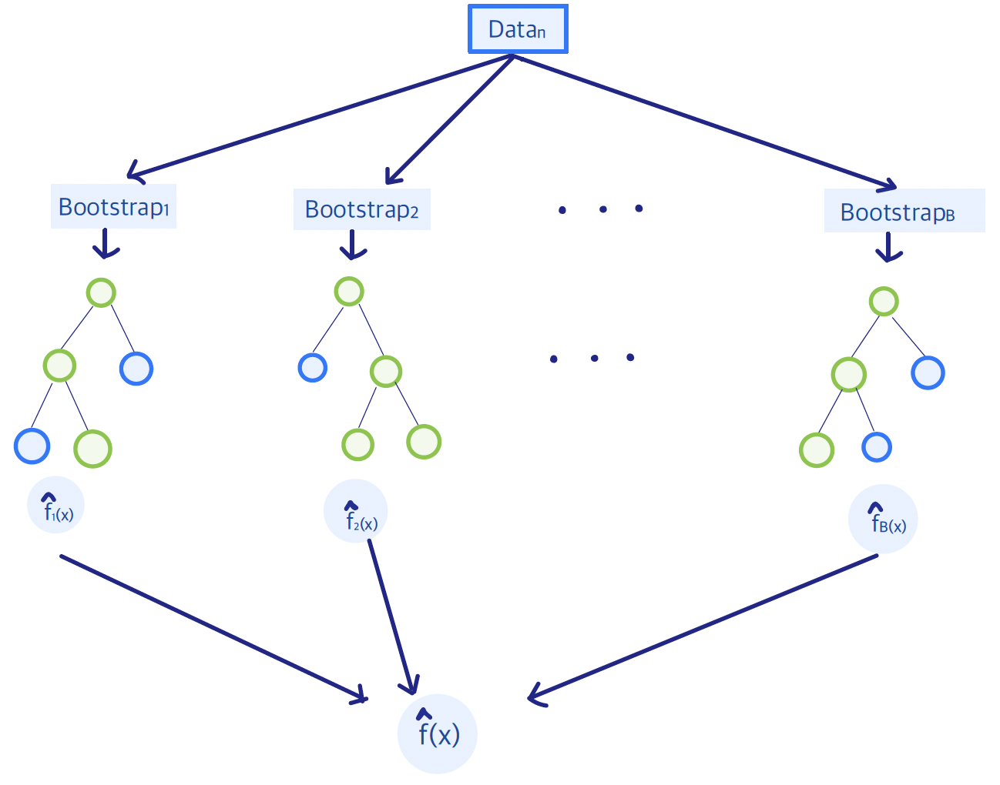

6.3 Regression Forests
Regression forests extend a single tree by combining many trees into an ensemble. Two sources of randomness are used. First, each tree is grown on a bootstrap sample of the observations (bagging). Second, in a random forest, each split searches only a random subset of the \(p\) predictors. The extra randomness makes the trees less correlated. The ensemble prediction is the average of the individual trees, which typically lowers variance relative to one deep tree and improves accuracy and stability. The simple picture of a single tree is lost.
6.3.1 Weak and Strong Learners
In our discussion of single-tree models, we highlighted their main drawbacks: they are often unstable – meaning that small changes in the data can lead to very different trees – and they tend to lack accuracy. For this reason they are considered weak learners.
A natural idea, widely explored in the literature, is to combine many weak learners to form a strong learner. Examples of such ensemble methods include bagging, boosting, and random forests.
Bagging and random forests construct multiple trees under different random perturbations, and average their predictions, while boosting takes a different approach; it progressively trains simple models of small capacity, and then adds them together.
Conceptually, an ensemble of trees is as follows:
6.3.2 Bootstrap Aggregation (Bagging)
Bagging (bootstrap aggregation) is an ensemble method designed to reduce the variance of a predictive model—particularly unstable ones. It works by repeatedly resampling the training data with replacement, fitting a model on each bootstrap sample, and then averaging their predictions (for regression) or taking a majority vote (for classification).
Consider having Training Data denoted by \(\mathbf{Z} = \Bigl\{(x_i, y_i)_{i=1}^{n} \Bigr\}\). Then, we can obtain bootstrap samples with replacement \(\mathbf{Z}^{*b} = \Bigl \{(x_i^{*b}, y_i^{*b})_{i=1}^{n} \Bigr \}\), where \(b=1, \ldots, B\), that is \[\begin{align*} \mathbf{Z}^{*1} &: (x_1^{*1}, y_1^{*1}), (x_2^{*1}, y_2^{*1}), \ldots, (x_n^{*1}, y_n^{*1})\\ \mathbf{Z}^{*2} &: (x_1^{*2}, y_1^{*2}), (x_2^{*2}, y_2^{*2}), \ldots, (x_n^{*2}, y_n^{*2})\\ \vdots &\\ \mathbf{Z}^{*B} &: (x_1^{*B}, y_1^{*B}), (x_2^{*B}, y_2^{*B}), \ldots, (x_n^{*B}, y_n^{*B}) \end{align*}\]
Then, the regression (or classification) function, \(\hat{f}^{*b}\), is trained on each sample \(\mathbf{Z}^{*b}\) and the Bagging Estimate is defined to be \[\hat{f}_{bag}(x) = \frac{1}{B} \sum_{b=1}^{B} \hat{f}^{*b}(x)\]
Because bagging relies on averaging the predictions of many individual trees, it can substantially reduce the variance of otherwise unstable learners like trees, thus improving predictive performance. However, the simple and interpretable structure of a single tree is lost once it is embedded in an ensemble. Moreover, if the individual trees are highly correlated, the variance reduction achieved through bagging may be limited.
6.3.3 Random Forests
The development of random forests can be seen as the convergence of several ideas that emerged in the 1990s. One major breakthrough was Breiman’s introduction of bagging (bootstrap aggregation) that we discussed above, which demonstrated that averaging unstable predictors like trees could dramatically improve their performance by reducing variance. Around the same time, Ho proposed the random subspace method (1998), showing that further diversity among trees could be achieved by training each one on a randomly selected subset of features. This insight highlighted that injecting randomness into feature selection, not just the data, could strengthen ensembles of trees. Breiman built on both of these advances when he introduced random forests: a method that combines bagging with random feature selection at every split. By doing so, random forests create a large collection of de-correlated trees whose averaged predictions are both accurate and stable. This synthesis of bagging and random subspaces represents a turning point in ensemble learning, establishing random forests as one of the most powerful and widely used machine learning methods.
The random forest algorithm can be described in a few key steps:
Bootstrap Sampling (Bagging): For each tree in the forest, a bootstrap sample of the training data is drawn – this introduces variability among the trees.
Tree Construction with Random Feature Selection: Each tree is grown on its bootstrap sample, but with an important twist: at each split in the tree, only a randomly chosen subset of features is considered as candidates for the split – this further decorrelates the trees and enhances the variance reduction achieved by averaging.
Tree Growth: Typically, the trees in a random forest are grown deep (without pruning), allowing them to capture complex patterns in the data. Overfitting of individual trees is not a concern, since averaging across many trees stabilizes the final model.
Prediction: For regression, the forest’s prediction is the average of the predictions from all trees.
Out-of-Bag (OOB) Error Estimation: Since each bootstrap sample leaves out about one-third of the training data, these “out-of-bag” observations can be used to estimate prediction error, providing a built-in form of cross-validation.
Sketch of the Algorithm
For \(b=1, \ldots, B\)
Draw a bootstrap sample of size \(n\) \(\mathbf{Z}^{*b}\) from the training data.
Grow a BIG tree \(T_b\) by recursively repeating the following steps for each terminal node of the tree, until the minimum node size is reached:
1. Select m variables at random from the p variables.
2. Pick the best variable/split-point among the m.
3. Split the node into two children nodes.Output the forest, i.e. ensemble of trees: \(\{T_b\}_{b=1}^{B}\)
Predict at a new point \(x\) (Regression case) \[ \hat{f}^B (x) = \frac{1}{B} \sum_{b=1}^{B} T_b(x)\]
Restrictions
When constructing each tree in the forest, at every split, we consider a subset of \(m\) features is chosen at random from the total of \(p\) available features. The algorithm then determines the best split using only this subset of \(m\) features. A common rule of thumb is to set \(m=\sqrt{p}\) for classification and \(m=p/3\) for regression.
By restricting each split to a random subset of features, the trees are less likely to all rely on the same strong predictors, thereby reducing correlation among trees and increasing the overall effectiveness of the ensemble.
6.3.4 Out-of-Bag (OOB) Samples
Out-of-bag (OOB) samples are the observations that do not appear in the bootstrap dataset \(Z^{*b}\) and are therefore not used to build the corresponding tree \(T_b\). These left-out samples provide a natural test set for evaluating \(T_b\). In practice, the OOB error is computed by aggregating predictions for each observation using only the trees where that observation was excluded from training. Implementations such as randomForest report predictions and error rates based on this OOB evaluation. The resulting error estimate is typically very close to what would be obtained through cross-validation.
6.3.4.1 Variable Importance
Variable Importance in Random Forests can be assessed in two main ways. Based on:
Reduction in RSS (or Impurity): At each split, the algorithm records the improvement in the residual sum of squares (RSS) that results from splitting on a given variable. This improvement is attributed to the splitting variable. For each variable, these improvements are accumulated over all splits in a tree, and then averaged across all trees in the forest. The result reflects how much each variable contributes to reducing prediction error through the splitting process.
Permutation of Predictors: For each tree \(T_b\), compute its prediction error on the out-of-bag (OOB) samples (mean squared error for regression, classification error for classification). Next, randomly permute the values of the \(j\)th predictor within the OOB data and recalculate the prediction error. The increase in error caused by this permutation indicates the importance of that variable. This difference is averaged across all trees and, to account for variability, further normalized by the corresponding standard deviation.
6.3.5 Boosting Trees
Boosting is an ensemble learning technique that combines multiple weak learners, such as trees, into a single, strong predictive model. Unlike bagging or random forests, which grow trees independently, boosting builds trees sequentially, with each new tree focused on correcting the errors of the previous ensemble.
For example, if we consider an additive model, \[F(x) = f_1(x) + f_2(x) + \ldots + f_{T-1}(x) + f_T(x)\] it is difficult to solve for all \(f_t\)s. Instead we solve it using a forward stagewise greedy algorithm.
Boosting leads to very high predictive accuracy, often outperforming bagging methods, and it is flexible and capable of capturing complex nonlinear relationships. However, it is more sensitive to noise and outliers compared to bagging methods, and it requires careful tuning of hyperparameters to avoid overfitting.